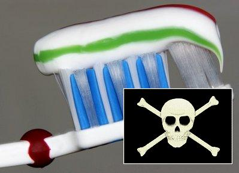
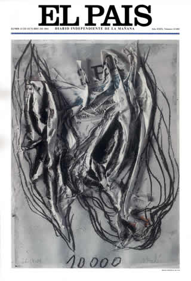

Últimas noticias
| Incautados en Fuenlabrada otros 11.000 tubos de dentífrico falsos |
|
Los productos son copias de marcas originales y están fabricados en Sudáfrica, Marruecos y Brasil.La policía inmoviliza alrededor de 84.000 tubos en siete autonomías.La UE alertará hoy a todos sus miembros.+más. |
|  |
| Incautados en Fuenlabrada otros 11.000 tubos de dentífrico falsos |
Los productos son copias de marcas originales y están fabricados en Sudáfrica, Marruecos y Brasil.La policía inmoviliza alrededor de 84.000 tubos en siete autonomías.La UE alertará hoy a todos sus miembros. +más. |
| Incautados en Fuenlabrada otros 11.000 tubos de dentífrico falsos |
Los productos son copias de marcas originales y están fabricados en Sudáfrica, Marruecos y Brasil.La policía inmoviliza alrededor de 84.000 tubos en siete autonomías.La UE alertará hoy a todos sus miembros. +más. |
Mis medios de comunicación favoritos
|  |
|
Software que merece la pena
Java Alternativas Libres Dreamweaver
Descárgate algunos documentos